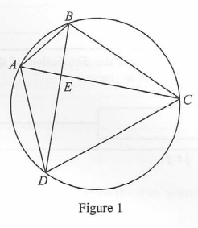

In Figure 1, \(AB\), \(BC\), \(CD\) and \(AD\) are chords of the circle. \(AC\) and \(BD\) intersect at \(E\). It is given that \(BE=8\text{ cm}\), \(CE=20\text{ cm}\) and \(DE=15\text{ cm}\).
(a) Write down a pair of similar triangles in Figure 1. Also find \(AE\). (3 marks)
(b) Suppose that \(AB=10\text{ cm}\). Are \(AC\) and \(BD\) perpendicular to each other? Explain your answer. (2 marks)

In the circle, the two triangles \(\triangle AEB\) and \(\triangle DEC\) share the vertex \(E\) where the chords \(AC\) and \(BD\) intersect. Examine their angles:
\[ \angle AEB = \angle DEC \quad (\text{vertically opposite angles}) \] \[ \angle ABE = \angle DCE \quad (\angle \text{ in the same segment, subtended by arc } AD) \]Hence two pairs of equal angles are found, so \(\triangle AEB \sim \triangle DEC\).
Since the triangles are similar, corresponding sides are proportional. Match the sides opposite equal angles:
\[ \frac{AE}{DE} = \frac{BE}{CE} \](Equivalently, \(AE \cdot CE = BE \cdot DE\), the intersecting chords theorem.)
Substitute the given lengths \(BE=8\), \(CE=20\), \(DE=15\):
\[ \frac{AE}{15} = \frac{8}{20} = \frac{2}{5} \] \[ AE = 15 \times \frac{2}{5} = 6 \text{ cm} \]Also accepted: \(\triangle AED \sim \triangle BEC\) with \(\dfrac{AE}{BE}=\dfrac{DE}{CE}\) gives the same result.
From part (a), \(AE=6\text{ cm}\), \(BE=8\text{ cm}\), and we are now told \(AB=10\text{ cm}\). Check the converse of the Pythagorean theorem in \(\triangle AEB\):
\[ AE^2 + BE^2 = 6^2 + 8^2 = 36 + 64 = 100 \] \[ AB^2 = 10^2 = 100 \]So \(AE^2 + BE^2 = AB^2\).
By the converse of the Pythagorean theorem, \(\angle AEB = 90^\circ\) (right angle). Since \(A\), \(E\), \(C\) are collinear and \(B\), \(E\), \(D\) are collinear, the angle between the lines \(AC\) and \(BD\) is \(90^\circ\).
Note: the fact that \(AB=10\) forces \(\angle AEB=90^\circ\); this is independent of the circle geometry beyond part (a).
Key idea: intersecting chords create similar triangles; the ratio of corresponding sides gives the missing chord segment. The Pythagorean converse then tests perpendicularity.